01 · 백합 Lily
문태준 Moon Taejun
《파문의 안쪽》
잔잔한 수면 위에 몸을 숙이고, 물 아래 비친 또 하나의 자신을 내려다본다.
(The Afterimage Edition) Winter '26

우리는 닿는 순간부터번지고 있었다(We were bleeding from the moment we touched)
Scroll

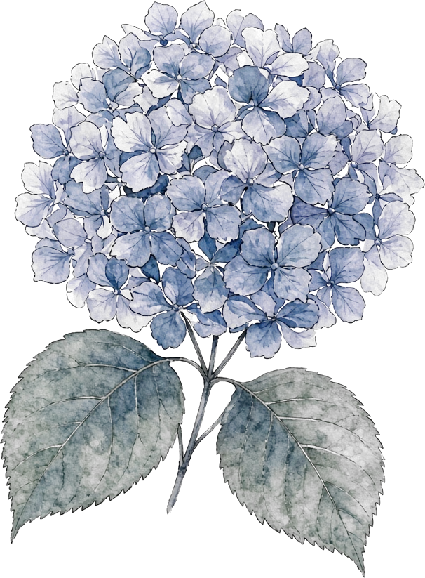
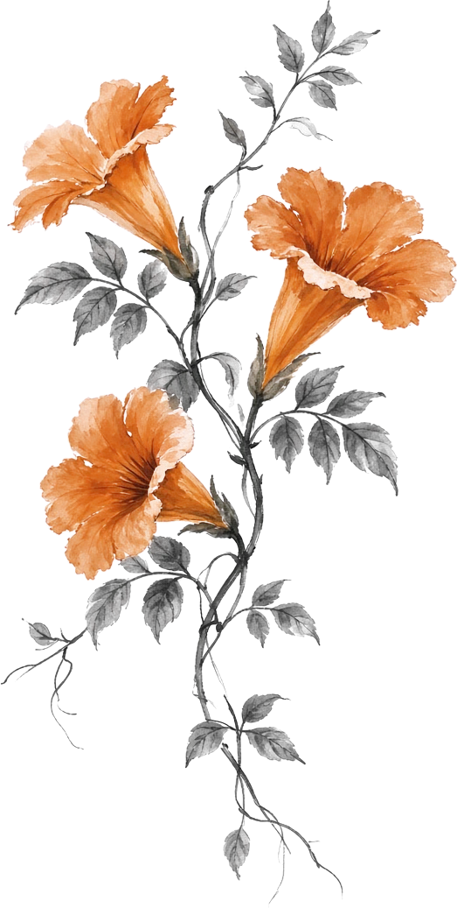
Four people standing at four depths of one water.
수면 위, 수면, 떨어지는 것, 수면 아래 — 네 사람이 한 물의 단면이 된다.


네 장면을 나란히 놓으면 수면 위(진우), 수면(태준), 수면으로 떨어지는 것(유성), 수면 아래(류현)로 물의 단면이 된다. 패널의 수평선 높이를 이 순서로 맞춰 한 장의 그림으로 잇는다.
《파문의 안쪽》
잔잔한 수면 위에 몸을 숙이고, 물 아래 비친 또 하나의 자신을 내려다본다.
《낙화》
하늘을 올려다보고 서 있고, 꽃이 송이째 수없이 떨어진다.
《수면의 빛》
빛나는 나비를 따라 얕은 물 위를 달린다. 발밑에서 빛이 흩어진다.
《수심》 (제안)
물속으로 천천히 내려가며 위로 손을 뻗는다. 빛이 닿을 듯 닿지 않는다.
Listen in the dark room, where the rain left its echo.
어두운 청음실에서, 장마가 남긴 잔향을 듣는다.
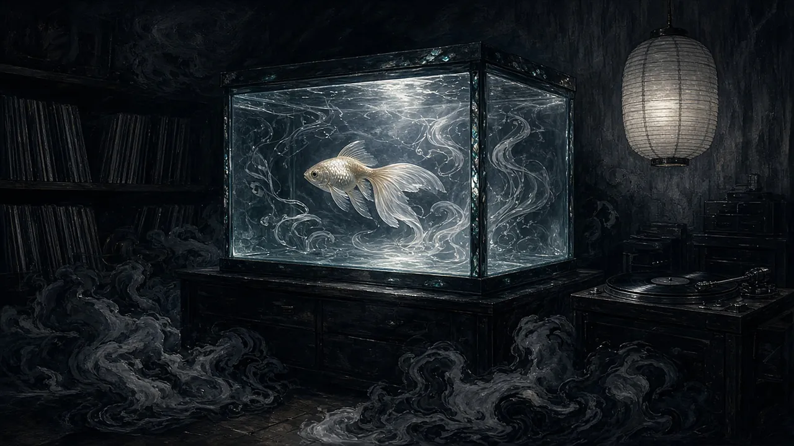
미리듣기 전용 · 내려받기 없음 · 정식 유통은 Ditto, 유통 후 곡마다 외부 링크
Notes on what could not settle, on paper that remembers.
맺지 못한 것들에 대한 기록. 종이는 번진 자리를 기억한다.
결락(結落)은 맺지 못하고 떨어진 것들을 노래하는 4인조 밴드다.
비가 맺지 못한 것들, 지워도 다시 맺히는 흔적. 네 사람은 서로 다른 깊이의 물에서 같은 노래를 부른다.
Small things to keep, after the music ends.
음악이 끝난 뒤에도 손에 남는 것들.
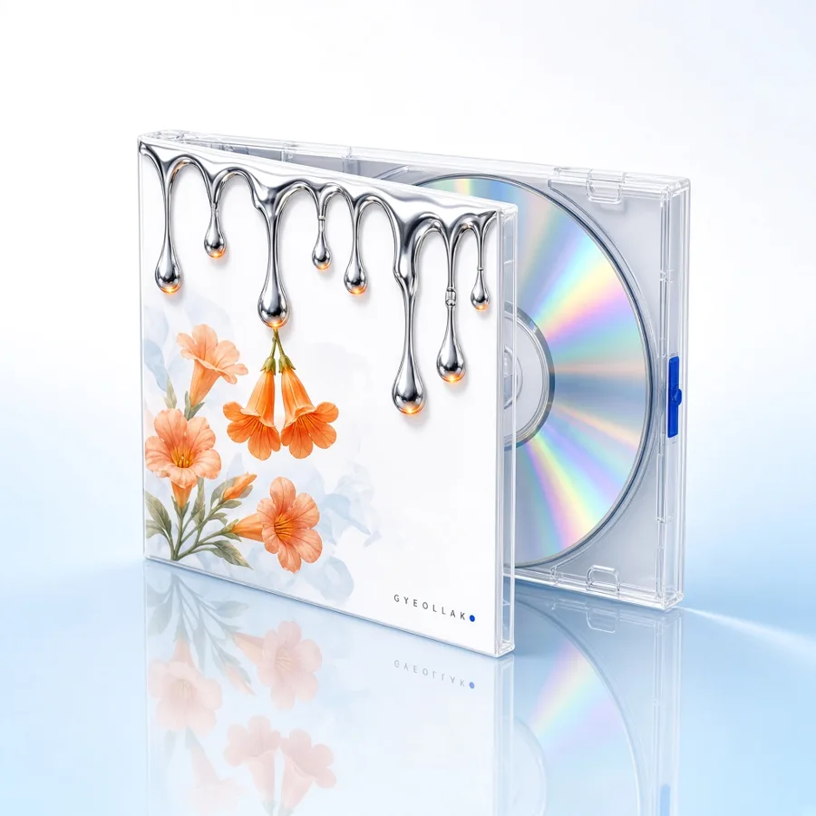
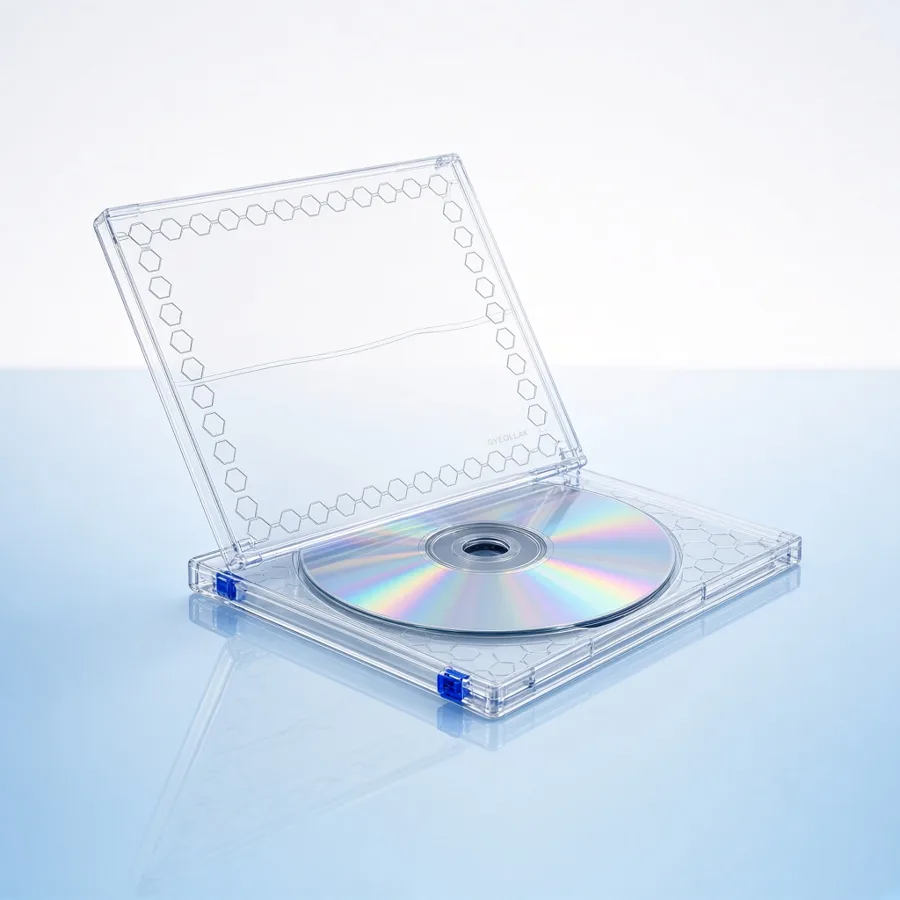
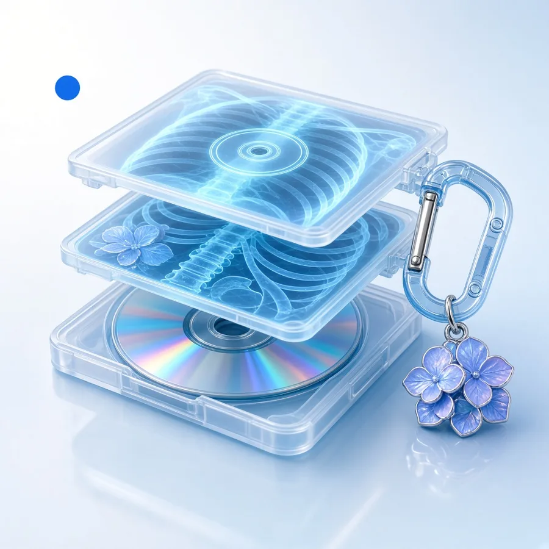
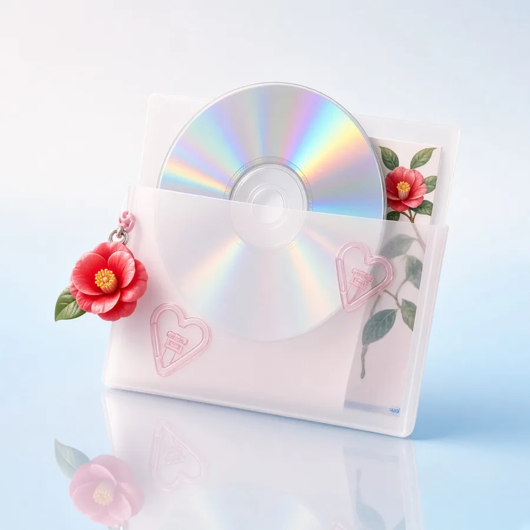
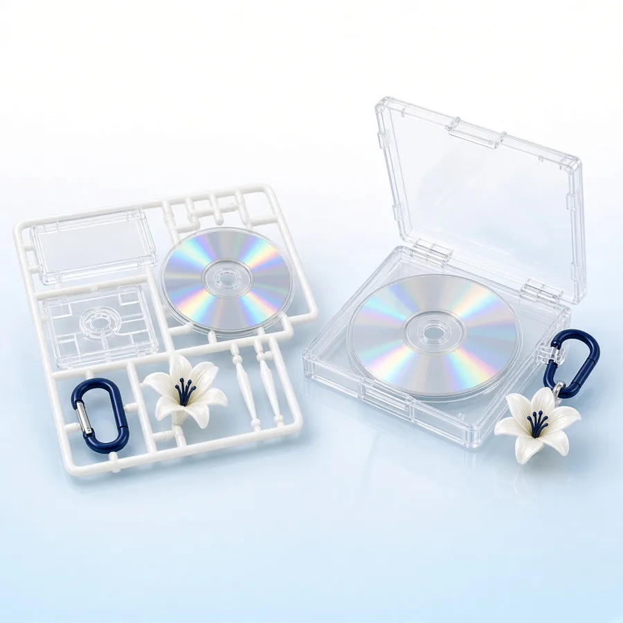
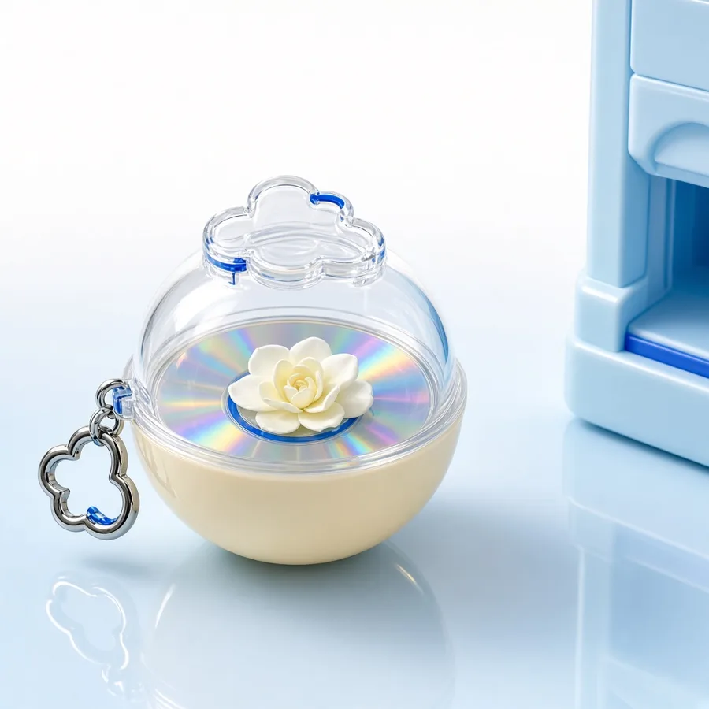
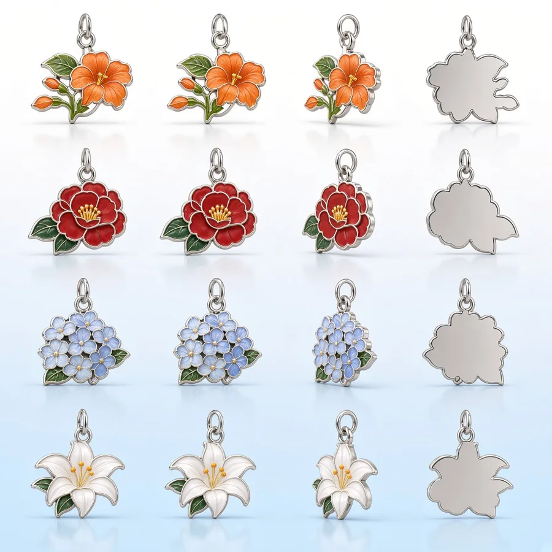
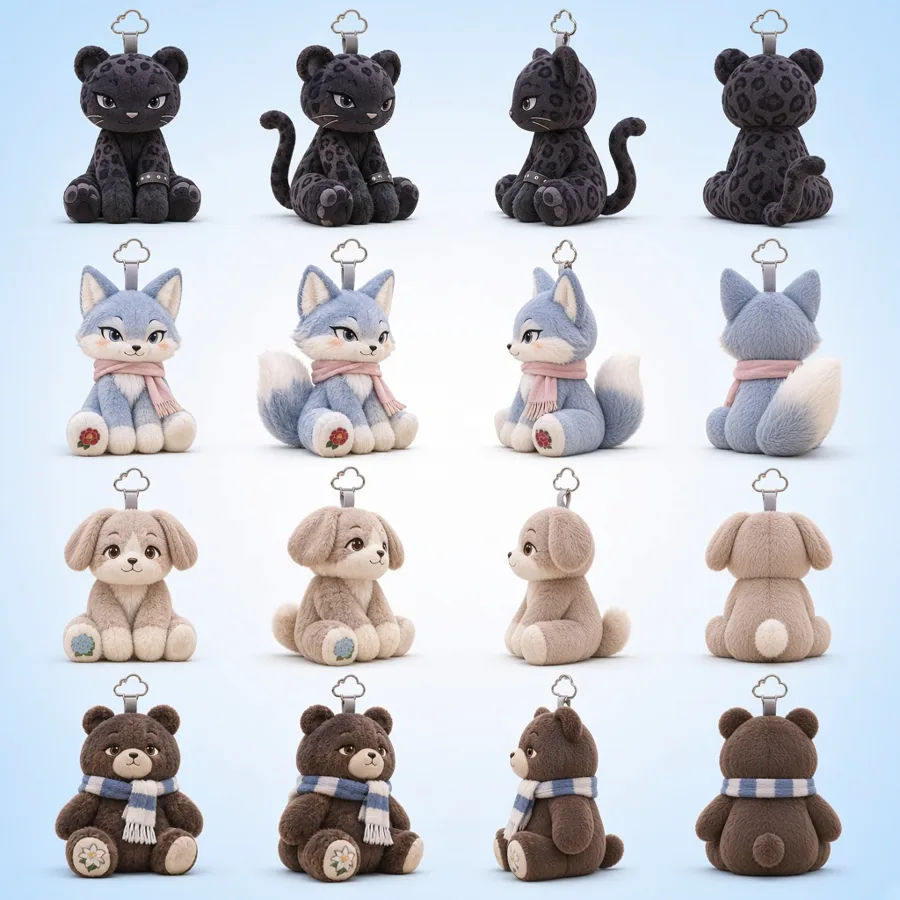
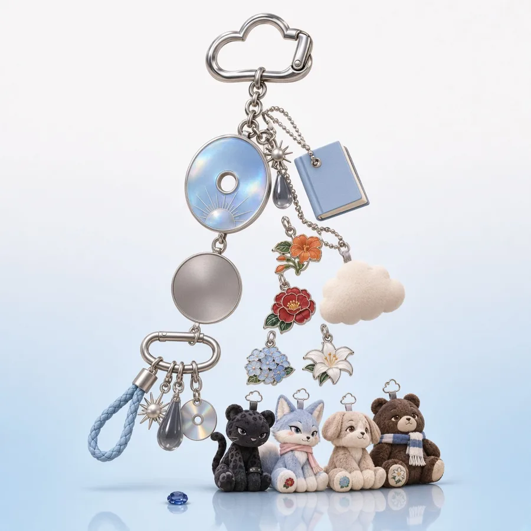